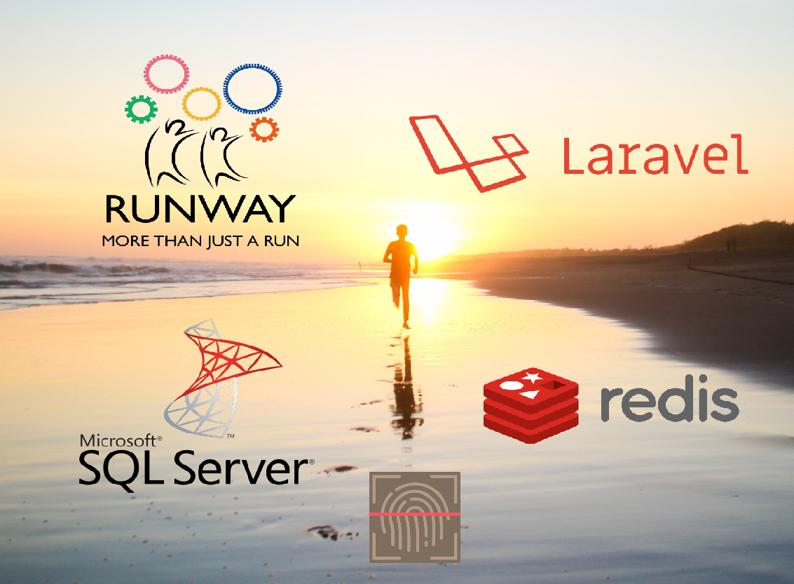
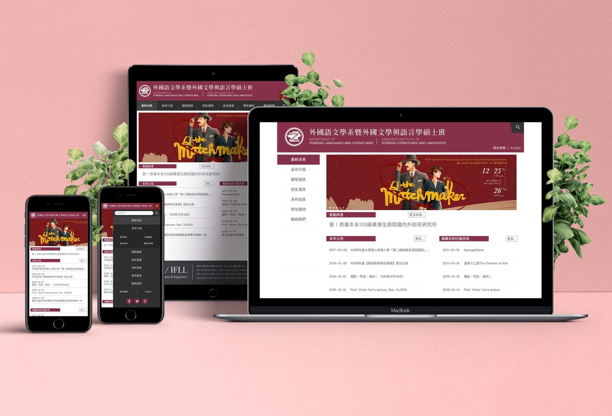
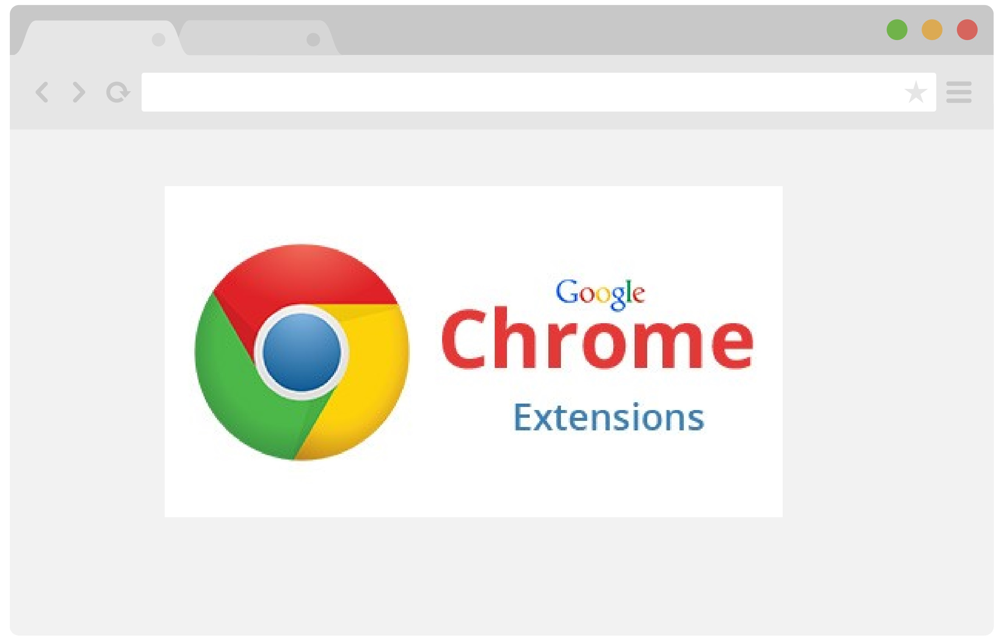
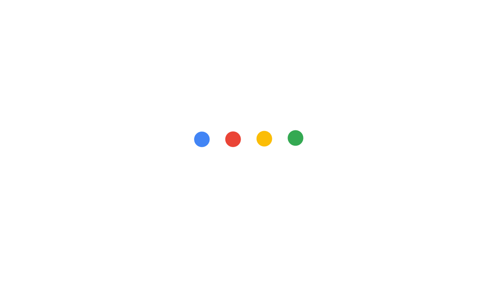
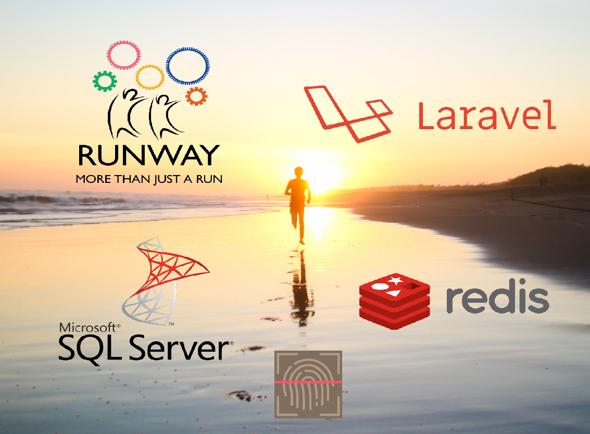
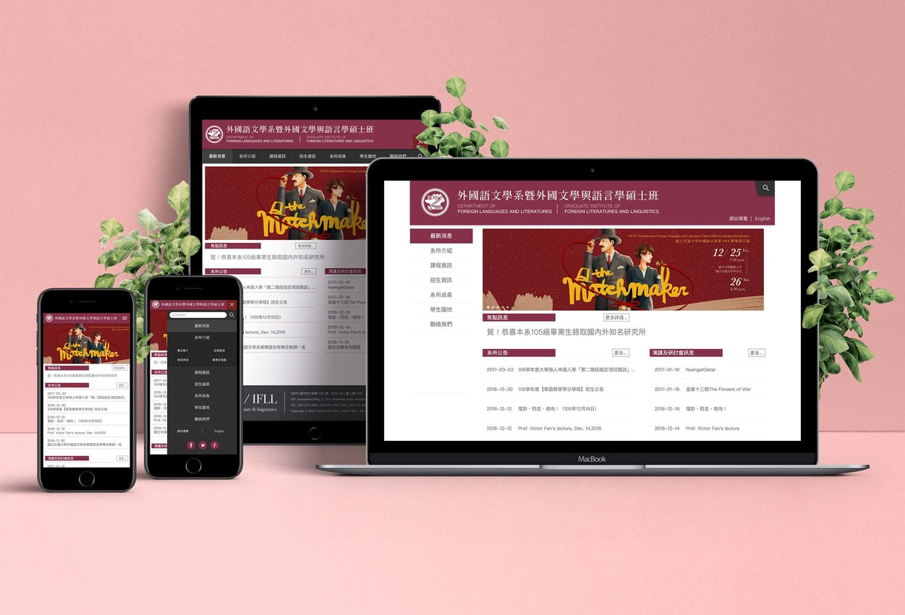
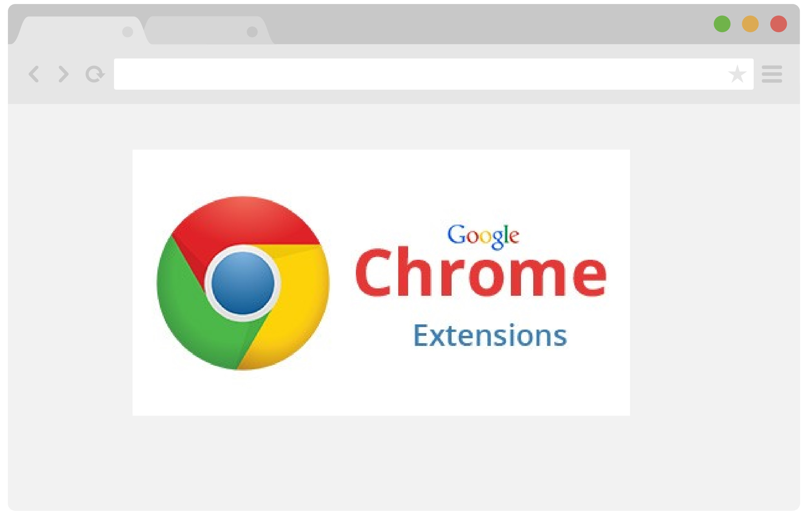
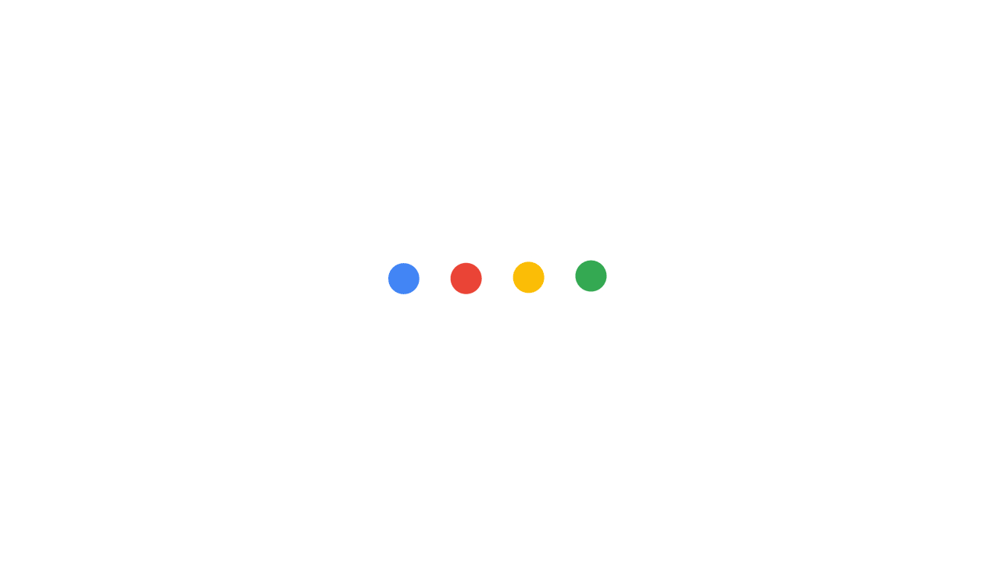

作品集
PORTFOLIO

交大運動吃早餐 link
NCTU Runway

交大外文系網站 link
NCTU Foreign Language website

投資模擬系統網站 private
Investment simulation system

筆記討論反饋擴充套件 private
Note-taking chrome extension

更多專案生產中
In progress
I'm interested in all kinds of technology, but my main focus is currently on data science. I also have skills in other fields like front-end development. I'm a web full-stack developer with 3 years of professional experience.
資訊科學與工程研究所資訊系統組
國立交通大學 National Chiao Tung University
Mobile and Pervasive Computing Laboratory
資訊科學系資電工程組
國立交通大學 National Chiao Tung University
graduated top of my class GPA:3.88/4.3
聯發科技 MediaTek Inc.
台灣微軟 Microsoft Corp. Taiwan
工業技術研究院 Industrial Technology Research Institute(ITRI)
銳綸數位 RulingDigital Inc.
羅技黑客松 /
第三名 Third Place
星展銀行黑客松 /
佳作 Excellent Work
梅竹黑客松 /
合勤科技第二名 Competition of Zyxel Corp., Second Place
梅竹黑客松 /
玉山銀行佳作 Competition of Esun Bank, Excellent Work
書卷獎 /
第二名 Second Place
書卷獎 /
第一名 First Place
書卷獎 /
第一名 First Place
書卷獎 /
第一名 First Place
書卷獎 /
第二名 Second Place
Data science
Full Stack Development

交大運動吃早餐 link
NCTU Runway

交大外文系網站 link
NCTU Foreign Language website
投資模擬系統網站 private
Investment simulation system

筆記討論反饋擴充套件 private
Note-taking chrome extension

更多專案生產中
In progress